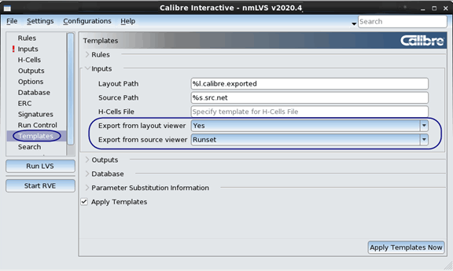

If Calibre
Interactive is connected to a layout or schematic viewer, you have
the option of specifying the open layout or netlist as the input
file for the run; this is called layout or schematic export. You
can set a preference for the export setting that is used when Calibre Interactive
is invoked from a layout or schematic viewer. The preference setting
is on the Templates page,
under the Inputs section. This preference setting is not used in
batch mode or command line execution.
Figure 1 shows the Inputs page for Calibre Interactive
nmLVS. The options for input file templates are different for different
run types, and the “Export from source viewer” setting is not present
for Calibre nmDRC runs. Table 1 explains the possible settings of Yes,
No, and Runset for the export preference.
Figure 1. Defining Export Preferences in
the Templates Page
Table 1. Export Preference Settings in the Setup
Preferences DialogSetting
|
Description
|
|---|
Export
from layout viewer
Default = Yes
|
If Calibre Interactive
is invoked from a layout viewer:
Yes —
Export from layout viewer, regardless of the runset setting for
“Export from layout viewer” on the Layout tab
of the Inputs pane.
No —
Do not export from layout viewer, regardless of the runset setting
for “Export from layout viewer” on the Layout tab
of the Inputs pane.
Runset —
Use the setting from “Export from layout viewer” on the Layout tab
of the Inputs pane.
|
Export
from source viewer
(for LVS, PERC, and PEX only)
Default = Runset
|
If Calibre Interactive
is invoked from a schematic viewer:
Yes —
Export from schematic viewer, regardless of the runset setting for
“Export from schematic viewer” on the Netlist tab
of the Inputs pane.
No —
Do not export from schematic viewer, regardless of the runset setting
for “Export from schematic viewer” on the Netlist tab
of the Inputs pane.
Runset —
Use the setting from “Export from schematic viewer’ on the Netlist tab
of the Inputs pane.
|
The template settings in Table 1 affect the “Export from
layout viewer” and “Export from source viewer” settings on the Inputs page under the Layout Path
and Source Path sections.